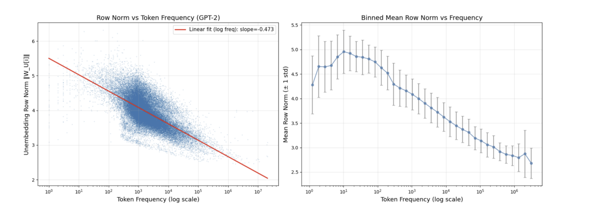
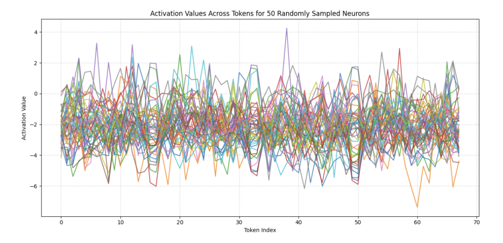
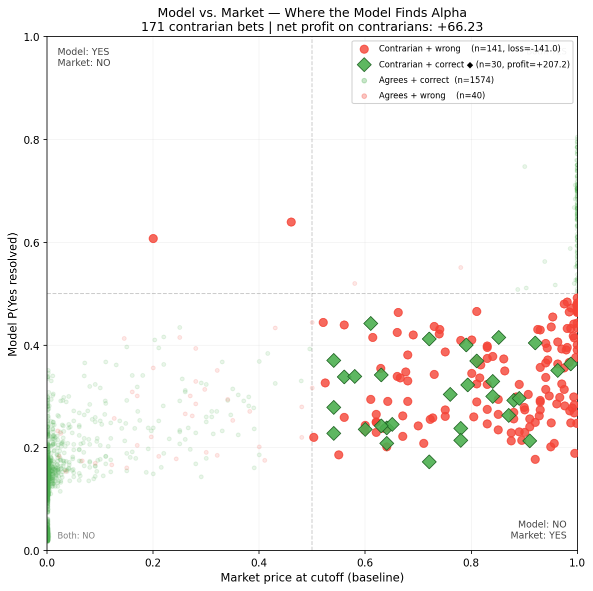
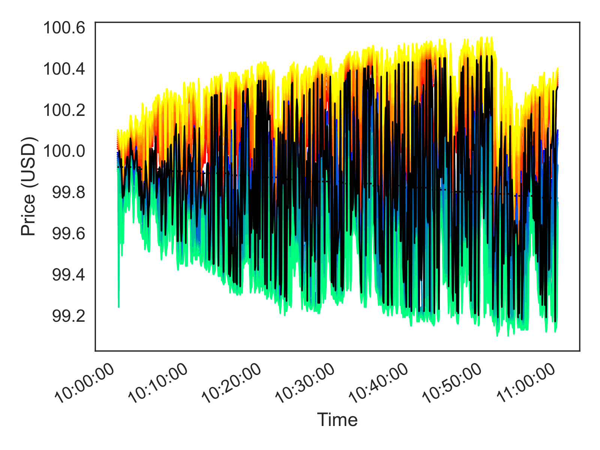
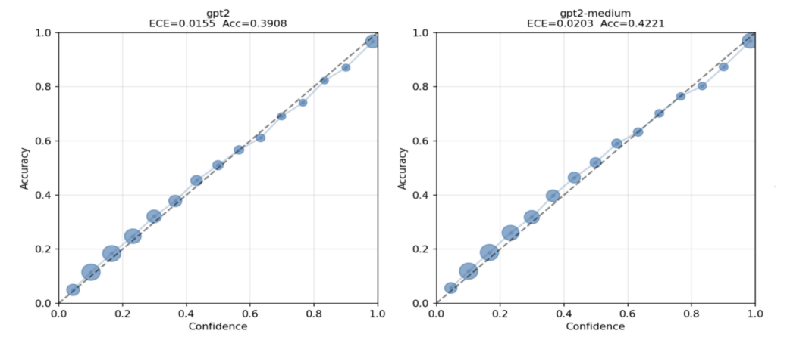
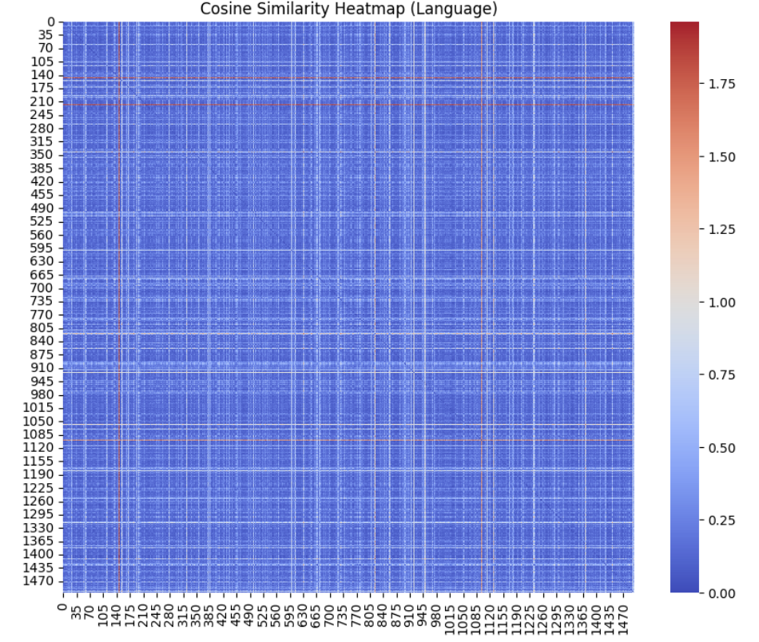
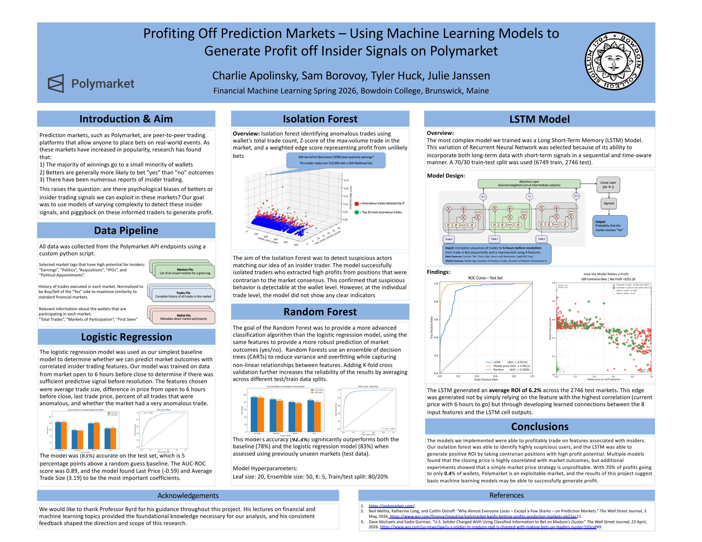
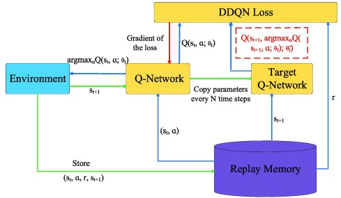

A weights-based mechanistic account of calibration in transformer LLMs, arguing that calibration is substantially a geometric artifact of how token frequency is encoded through the unembedding matrix.

Exploring polysemanticity and superposition in neural networks — how models represent more features than neurons, and the interpretability challenges this creates.

Isolation Forest + LSTM models trained on CLOB data to detect anomalous Polymarket transactions — organically discovering the profitability of contrarian "No" positions.

A custom PyTorch DDQN trading agent for the minabides HFT simulation. Evaluates a 6-dimensional state space from a 30-step price history queue to optimize net portfolio growth.

A model is calibrated when its stated confidence matches its empirical accuracy. The calibration properties of transformer models remain poorly understood at a theoretical level, and the empirical literature is fragmented on the circumstances under which calibration transpires.
This paper presents a weights-based mechanistic account of calibration in transformer language models, arguing that a substantial fraction of calibration is a geometric artifact of how token frequency is encoded through the unembedding matrix. We identify the token-mean direction µ of the unembedding matrix as the anti-frequency token axis across the GPT-2 transformer family. The first principal component of the centered unembedding encodes what we term the Zipfian shortcut — a learned mechanism that boosts common tokens regardless of context, which is causally verified through ablation experiments.
We further show that the encoding strategy shifts with scale: smaller models concentrate frequency information in a small number of components, while larger models distribute it across many layers. Together these findings reconcile previously contradictory observations in the calibration literature.

This paper explores the phenomena of superposition and polysemanticity in neural networks, which complicate the interpretability of how features are represented in the model. I investigate the behavior of features in the activation space of neural networks, particularly within the MLP blocks of a Transformer.
Features are often represented by combinations of activations across multiple neurons, making it difficult to disentangle individual features. Superposition enables neural networks to represent more features than the number of neurons, showcasing one of their greatest strengths. However, this comes at the expense of interpretability, often leading them to be viewed as "black boxes."
The experiments in this paper reveal that as input sparsity increases, the nonlinear model begins to represent more features than its dimensionality, leading to polysemantic behavior where neurons encode multiple features.

Motivated by reports of suspicious trading activity on Polymarket surrounding major events — such as the Maduro raid, Nobel Prize announcements, and the Iran attacks — this project aimed to detect potential insider trading and leverage those signals for a high-alpha trading strategy.
Using market-level and Central Limit Order Book (CLOB) data from the Polymarket API, we developed an Isolation Forest classifier and an LSTM neural network. These models successfully identified anomalous transactions and generated profitable strategies within the earnings and political markets.
A key insight generated by our model was the profitability of taking contrarian "No" positions on market resolutions. This organically learned strategy directly corroborates a
Wall Street Journal analysis
highlighting that prediction market traders possess a bias toward overvaluing "Yes" bets.

An autonomous reinforcement learning agent built for the minabides high-frequency trading (HFT) simulation environment. Originally developed as an academic project, this custom PyTorch implementation utilizes a Double Deep Q-Network to execute optimal trading strategies (Buy, Hold, Sell).
The agent evaluates a complex 6-dimensional state space — including Bollinger Bands, LOB imbalance, and microprice deviation — derived from a 30-step price history queue. By decoupling action selection and evaluation through a Target Network, and utilizing a reward function that penalizes basis point transaction costs, the model successfully stabilizes training and optimizes for net portfolio growth over time.